pilot
Karissa Barthelson
2023-06-14
Last updated: 2023-08-24
Checks: 7 0
Knit directory: 2023_MPSIII_salbutamol/
This reproducible R Markdown analysis was created with workflowr (version 1.7.0). The Checks tab describes the reproducibility checks that were applied when the results were created. The Past versions tab lists the development history.
Great! Since the R Markdown file has been committed to the Git repository, you know the exact version of the code that produced these results.
Great job! The global environment was empty. Objects defined in the global environment can affect the analysis in your R Markdown file in unknown ways. For reproduciblity it’s best to always run the code in an empty environment.
The command set.seed(20230614) was run prior to running the code in the R Markdown file. Setting a seed ensures that any results that rely on randomness, e.g. subsampling or permutations, are reproducible.
Great job! Recording the operating system, R version, and package versions is critical for reproducibility.
Nice! There were no cached chunks for this analysis, so you can be confident that you successfully produced the results during this run.
Great job! Using relative paths to the files within your workflowr project makes it easier to run your code on other machines.
Great! You are using Git for version control. Tracking code development and connecting the code version to the results is critical for reproducibility.
The results in this page were generated with repository version e7fb2e6. See the Past versions tab to see a history of the changes made to the R Markdown and HTML files.
Note that you need to be careful to ensure that all relevant files for the analysis have been committed to Git prior to generating the results (you can use wflow_publish or wflow_git_commit). workflowr only checks the R Markdown file, but you know if there are other scripts or data files that it depends on. Below is the status of the Git repository when the results were generated:
Ignored files:
Ignored: .DS_Store
Ignored: .Rhistory
Ignored: .Rproj.user/
Ignored: code/.DS_Store
Ignored: data/.DS_Store
Ignored: data/exp1.2/.DS_Store
Ignored: data/exp1.2/raw_data/.DS_Store
Ignored: data/exp1.2/raw_data/distances/.DS_Store
Ignored: data/exp1.2/raw_data/zones/.DS_Store
Ignored: data/exp1.2/videos/
Ignored: data/exp1/.DS_Store
Ignored: data/exp1/processed_data/.DS_Store
Ignored: data/exp1/raw_data/.DS_Store
Ignored: data/exp1/videos/
Ignored: data/pilot/.DS_Store
Ignored: data/pilot/14 days/.DS_Store
Ignored: data/pilot/14 days/raw_data/.DS_Store
Ignored: data/pilot/7 days/.DS_Store
Ignored: data/pilot/7 days/raw_data/.DS_Store
Ignored: data/pilot/7 days/raw_data/distances/.DS_Store
Ignored: data/pilot/7 days/tracking_videos/
Untracked files:
Untracked: analysis/fullexp1-2.rmd
Untracked: code/experiment 1.2/
Untracked: code/experiment 1/distances_exp1.2.R
Untracked: code/plotMaking.R
Untracked: data/R_objects/
Untracked: data/exp1.2/processed_data/
Untracked: data/exp1.2/~$2023_Aug18_salbutamolexp1_2_meta.xlsx
Untracked: output/plots/
Unstaged changes:
Modified: .gitignore
Modified: analysis/fullexp1.rmd
Modified: data/exp1.2/2023_Aug18_salbutamolexp1_2_meta.xlsx
Modified: data/exp1.2/metadata_withGenotype.rds
Deleted: data/exp1.2/raw_data/distances/ymaze_inLT-20230818T102151-data_totals.csv
Deleted: data/exp1.2/raw_data/distances/ymazeinLT-20230818T095428-data_totals.csv
Deleted: data/exp1.2/raw_data/distances/ymazeinLT-20230818T095643-data_totals.csv
Deleted: data/exp1.2/raw_data/distances/ymazeinLT-20230818T164213-data_totals.csv
Deleted: data/exp1.2/raw_data/distances/ymazeinLT-20230818T164447-data_totals.csv
Deleted: data/exp1.2/raw_data/zones/ymaze8-20230818T095443.csv
Deleted: data/exp1.2/raw_data/zones/ymaze_inLT-20230818T102150.csv
Deleted: data/exp1.2/raw_data/zones/ymazeinLT-20230818T095427.csv
Deleted: data/exp1.2/raw_data/zones/ymazeinLT-20230818T095643.csv
Deleted: data/exp1.2/raw_data/zones/ymazeinLT-20230818T164213.csv
Deleted: data/exp1.2/raw_data/zones/ymazeinLT-20230818T164446.csv
Note that any generated files, e.g. HTML, png, CSS, etc., are not included in this status report because it is ok for generated content to have uncommitted changes.
These are the previous versions of the repository in which changes were made to the R Markdown (analysis/pilot.rmd) and HTML (docs/pilot.html) files. If you’ve configured a remote Git repository (see ?wflow_git_remote), click on the hyperlinks in the table below to view the files as they were in that past version.
| File | Version | Author | Date | Message |
|---|---|---|---|---|
| Rmd | e7fb2e6 | Karissa Barthelson | 2023-08-23 | addded salbutamol exp 1.2 data + genotyping analsysis |
| html | e7fb2e6 | Karissa Barthelson | 2023-08-23 | addded salbutamol exp 1.2 data + genotyping analsysis |
| Rmd | eb8ca86 | Karissa Barthelson | 2023-06-15 | adding in some inital analyses with preprocessing of 7 day data |
| Rmd | bd62faa | Karissa Barthelson | 2023-06-14 | first commit |
library(tidyverse)
library(readxl)
library(here)
library(magrittr)
library(scales)
library(readxl)
library(ggpubr)
library(ggeasy)
library(ggfortify)
library(ggbeeswarm)
library(ggforce)
library(ggrepel)
library(kableExtra)
# stat analysis
library(broom)
library(lme4)
library(performance)
library(car)
library(emmeans)
library(glmmTMB)
library(MASS)
# set the default theme for ggplot as theme_bw
theme_set(theme_classic())meta <- read_excel("data/pilot/7 days/06062023 salbutamol pilot fish metadata.xlsx",
sheet = "7 days") %>%
# tidy up colnames
mutate(fish_id = as.character(fish_id),
treatment = factor(treatment, levels = c("untreated",
"20 µM Salbutamol",
"100 µM Salbutamol")),
sex = as.factor(sex),
start_time = as.factor(`start time`),
genotype = factor(genotype, levels = c("het", "hom")),
geno_treat = paste0(genotype, " ", treatment) %>% as.factor()
)
final_data <- read_csv("data/pilot/7 days/processed_data/final_output.csv") %>%
dplyr::select(-1) %>%
mutate(fish_id = as.character(fish_id)) %>%
left_join(meta) %>%
dplyr::filter(genotype %in% c("het", "hom"))
# make an object which converts the final data to long format. for easier plotting in ggplot
final_data_long <- final_data %>%
gather(key = "tetras", value = "Count", # convert to long format
grep("[L|R]{4}",
colnames(.))
)
# also make an object which sums the tetragrams over the hour
final_data_summedoverbins <- final_data %>%
gather(key = "tetras", value = "Count", # convert to long format
grep("[L|R]{4}", # select the columns which contain a L or a R four times
colnames(.))
) %>%
group_by(fish_id, tetras) %>%
mutate(x = sum(Count)) %>% # sum the tetragram counts per fish_id
dplyr::select(colnames(meta), tetras, x) %>%
unique
distances_7days <- read_rds("data/pilot/7 days/processed_data/distanceData7days.rds") %>%
mutate(start_time = case_when(
`start time` == 10.49 ~ 1,
`start time` == 10.51 ~ 2,
`start time` == 12 ~ 3,
`start time` == 12.04 ~ 4,
`start time` == 1.16 ~ 5,
`start time` == 1.19 ~ 6,
`start time` == 2.31 ~ 7,
`start time` == 2.37 ~ 8
) %>% as.factor()
)Introduction
This pilot analysis will determine whether treatment with salbutamol (B2-adrenergiv receptor) can rescue changes to behaviour in a zebrafish model of MPS IIIB (naglu homs).
The family of fish was consisted of 59 fish, het x hom so half het and half hom.
the fam was treated with either nothing, 20 uM or 100 uM salbutamol
7 days in the solution, changing the solution once 4 days in.
number fish per genotype and treatment
meta %>%
ggplot(aes(x = genotype, fill = treatment))+
geom_bar(position = "dodge") +
facet_wrap(~sex)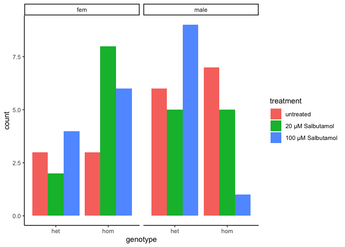
| Version | Author | Date |
|---|---|---|
| e7fb2e6 | Karissa Barthelson | 2023-08-23 |
assess propoer tracking
First need to have a look at whether tracking worked nicely for these fish. To do this, I will import
# make a df which will contain bin numbers.
#
# 6 min bins
bin_df <- tibble(bins10 = c(rep(1, 360),
rep(2, 360),
rep(3, 360),
rep(4, 360),
rep(5, 360),
rep(6, 360),
rep(7, 360),
rep(8, 360),
rep(9, 360),
rep(10, 360)) %>% as.factor(),
# 10 min buins
bins6 = c(rep(1, 600),
rep(2, 600),
rep(3, 600),
rep(4, 600),
rep(5, 600),
rep(6, 600)
) %>% as.factor(),
BIN_NUM = distances_7days$BIN_NUM %>% unique)
distances_7days %>%
left_join(bin_df) %>%
group_by(fish_id, bins6) %>%
mutate(total_distance = sum(TOTAL_DISTANCE_IN_ZONE)) %>%
dplyr::distinct(bins6, .keep_all = T) %>%
dplyr::filter(genotype %in% c('het', 'hom')) %>%
ggplot(aes(x = bins6, y = total_distance)) +
geom_hline(yintercept = 25000, colour = "red") +
geom_jitter(alpha = 0.75) +
geom_boxplot(aes(x = bins6),
fill = NA) +
geom_label(aes(label = fish_id),
data = . %>%
dplyr::filter(total_distance > 25000))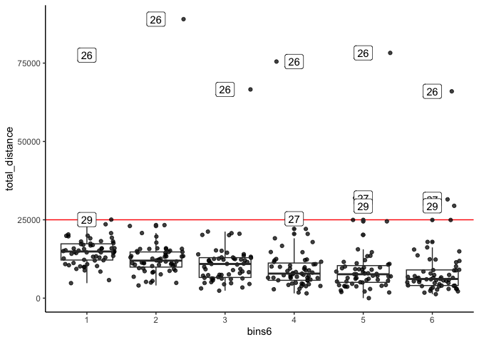
| Version | Author | Date |
|---|---|---|
| e7fb2e6 | Karissa Barthelson | 2023-08-23 |
Fish 26, 27 and 29 look way more active. I went back and checked the tracking videos and the tracking did not seem to work very well. So I will omit these fish from the rest of the analysis.
fish2omit = c(26,27,29)
distances_7days %<>%
dplyr::filter(!(fish_id %in% fish2omit))
final_data %<>%
dplyr::filter(!(fish_id %in% fish2omit))
final_data_long %<>%
dplyr::filter(!(fish_id %in% fish2omit))
final_data_summedoverbins %<>%
dplyr::filter(!(fish_id %in% fish2omit))recheck distribution of genotype & treatment
final_data %>%
dplyr::filter(bin == 1) %>%
ggplot(aes(x = genotype, fill = treatment))+
geom_bar(position = "dodge") +
facet_wrap(~sex) +
scale_y_continuous(breaks = seq(0,6))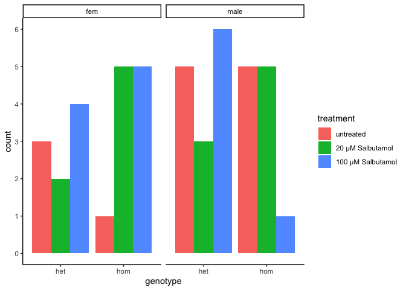
| Version | Author | Date |
|---|---|---|
| e7fb2e6 | Karissa Barthelson | 2023-08-23 |
trial effects
There was an alaram at the start of trials 2 and 3, and so might have some issues in trial specific effects.
paericularly noticible in the final 2 bins
distances_7days %>%
left_join(bin_df) %>%
group_by(fish_id, bins6) %>%
mutate(total_distance = sum(TOTAL_DISTANCE_IN_ZONE)) %>%
dplyr::distinct(bins6, .keep_all = T) %>%
dplyr::filter(genotype %in% c('het', 'hom')) %>%
ggplot(aes(x = bins6, y = total_distance, colour = start_time)) +
geom_hline(yintercept = 25000, colour = "red") +
geom_jitter(alpha = 0.75) +
geom_boxplot(aes(x = bins6),
fill = NA) +
geom_label(aes(label = fish_id),
data = . %>%
dplyr::filter(total_distance > 24000))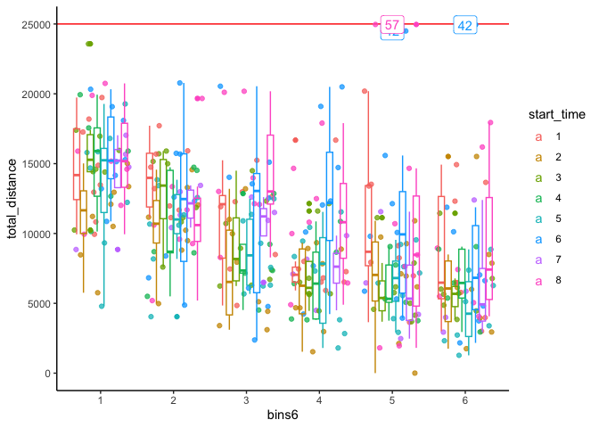
| Version | Author | Date |
|---|---|---|
| e7fb2e6 | Karissa Barthelson | 2023-08-23 |
total distance travelled
fit.dists <- distances_7days %>%
left_join(bin_df) %>%
group_by(fish_id, bins6) %>%
mutate(total_distance = sum(TOTAL_DISTANCE_IN_ZONE)) %>%
dplyr::distinct(bins6, .keep_all = T) %>%
dplyr::filter(genotype %in% c('het', 'hom')) %>%
lmer(total_distance ~ (genotype*treatment*bins6*sex) + (1|start_time) +(1|fish_id),
data = .)
# check assumptions
# all look ok
check_model(fit.dists)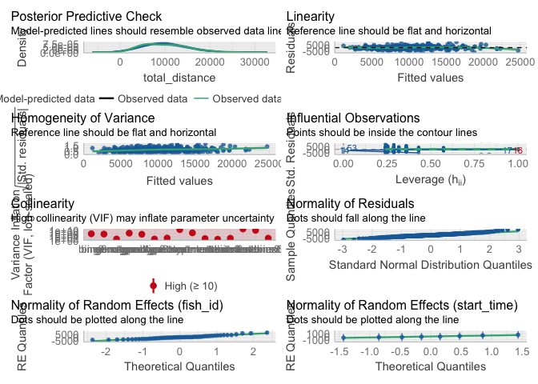
| Version | Author | Date |
|---|---|---|
| e7fb2e6 | Karissa Barthelson | 2023-08-23 |
Anova(fit.dists)Analysis of Deviance Table (Type II Wald chisquare tests)
Response: total_distance
Chisq Df Pr(>Chisq)
genotype 4.6949 1 0.03025 *
treatment 6.8964 2 0.03180 *
bins6 266.4341 5 < 2e-16 ***
sex 1.3479 1 0.24564
genotype:treatment 0.2665 2 0.87525
genotype:bins6 1.9308 5 0.85863
treatment:bins6 3.2700 10 0.97434
genotype:sex 0.7985 1 0.37154
treatment:sex 0.2839 2 0.86767
bins6:sex 3.9359 5 0.55868
genotype:treatment:bins6 4.9443 10 0.89487
genotype:treatment:sex 2.2286 2 0.32815
genotype:bins6:sex 7.4660 5 0.18823
treatment:bins6:sex 5.7270 10 0.83765
genotype:treatment:bins6:sex 9.0251 10 0.52973
---
Signif. codes: 0 '***' 0.001 '**' 0.01 '*' 0.05 '.' 0.1 ' ' 1emmeans(fit.dists, list(pairwise ~ genotype * treatment), adjust = "tukey")$`emmeans of genotype, treatment`
genotype treatment emmean SE df lower.CL upper.CL
het untreated 10074 1269 29.7 7481 12667
hom untreated 7934 1384 41.8 5140 10727
het 20 µM Salbutamol 12491 1475 42.3 9515 15466
hom 20 µM Salbutamol 10488 995 29.2 8454 12523
het 100 µM Salbutamol 9836 1066 27.3 7650 12022
hom 100 µM Salbutamol 6026 1860 42.7 2274 9779
Results are averaged over the levels of: bins6, sex
Degrees-of-freedom method: kenward-roger
Confidence level used: 0.95
$`pairwise differences of genotype, treatment`
1 estimate SE df t.ratio
het untreated - hom untreated 2140 1866 43.9 1.147
het untreated - het 20 µM Salbutamol -2417 1959 43.4 -1.233
het untreated - hom 20 µM Salbutamol -414 1584 43.5 -0.262
het untreated - het 100 µM Salbutamol 238 1661 40.9 0.143
het untreated - hom 100 µM Salbutamol 4047 2171 42.7 1.864
hom untreated - het 20 µM Salbutamol -4557 2038 43.9 -2.236
hom untreated - hom 20 µM Salbutamol -2555 1684 43.2 -1.517
hom untreated - het 100 µM Salbutamol -1902 1752 43.9 -1.086
hom untreated - hom 100 µM Salbutamol 1907 2308 43.9 0.826
het 20 µM Salbutamol - hom 20 µM Salbutamol 2002 1707 40.2 1.173
het 20 µM Salbutamol - het 100 µM Salbutamol 2655 1747 41.5 1.520
het 20 µM Salbutamol - hom 100 µM Salbutamol 6464 2397 44.0 2.696
hom 20 µM Salbutamol - het 100 µM Salbutamol 652 1426 44.0 0.458
hom 20 µM Salbutamol - hom 100 µM Salbutamol 4462 2132 43.7 2.093
het 100 µM Salbutamol - hom 100 µM Salbutamol 3809 2094 43.3 1.819
p.value
0.8588
0.8181
0.9998
1.0000
0.4375
0.2424
0.6553
0.8844
0.9610
0.8470
0.6539
0.0964
0.9973
0.3099
0.4645
Results are averaged over the levels of: bins6, sex
Degrees-of-freedom method: kenward-roger
P value adjustment: tukey method for comparing a family of 6 estimates # geno treat bin
print(emmeans(fit.dists, ~ genotype * treatment * bins6), type = "response") %>%
as_tibble() %>%
ggplot(aes(x = bins6, y = emmean, colour = treatment)) +
geom_col(aes(fill =treatment),
alpha = 0.75,
position = position_dodge()) +
geom_errorbar(aes(ymin = lower.CL, ymax = upper.CL),
position = position_dodge()) +
facet_wrap(~genotype, nrow = 1) genotype treatment bins6 emmean SE df lower.CL upper.CL
het untreated 1 14185 1562 71.0 11070 17299
hom untreated 1 12627 1739 100.9 9178 16076
het 20 µM Salbutamol 1 15618 1849 102.0 11950 19286
hom 20 µM Salbutamol 1 15041 1237 70.2 12574 17507
het 100 µM Salbutamol 1 15249 1318 65.3 12618 17880
hom 100 µM Salbutamol 1 9211 2323 103.0 4603 13818
het untreated 2 12344 1562 71.0 9229 15459
hom untreated 2 8570 1739 100.9 5121 12019
het 20 µM Salbutamol 2 14408 1849 102.0 10740 18076
hom 20 µM Salbutamol 2 12792 1237 70.2 10326 15259
het 100 µM Salbutamol 2 11468 1318 65.3 8837 14099
hom 100 µM Salbutamol 2 6835 2323 103.0 2228 11443
het untreated 3 10099 1562 71.0 6984 13214
hom untreated 3 7523 1739 100.9 4074 10972
het 20 µM Salbutamol 3 12371 1849 102.0 8703 16040
hom 20 µM Salbutamol 3 10979 1237 70.2 8512 13445
het 100 µM Salbutamol 3 9513 1318 65.3 6882 12144
hom 100 µM Salbutamol 3 7440 2323 103.0 2832 12047
het untreated 4 8244 1562 71.0 5129 11359
hom untreated 4 6648 1739 100.9 3199 10097
het 20 µM Salbutamol 4 11232 1849 102.0 7564 14901
hom 20 µM Salbutamol 4 9033 1237 70.2 6567 11500
het 100 µM Salbutamol 4 8577 1318 65.3 5946 11208
hom 100 µM Salbutamol 4 4487 2323 103.0 -121 9095
het untreated 5 8390 1562 71.0 5275 11505
hom untreated 5 6224 1739 100.9 2775 9673
het 20 µM Salbutamol 5 10436 1849 102.0 6768 14105
hom 20 µM Salbutamol 5 7902 1237 70.2 5435 10368
het 100 µM Salbutamol 5 7802 1318 65.3 5171 10433
hom 100 µM Salbutamol 5 4355 2323 103.0 -253 8963
het untreated 6 7181 1562 71.0 4066 10296
hom untreated 6 6010 1739 100.9 2561 9459
het 20 µM Salbutamol 6 10878 1849 102.0 7209 14546
hom 20 µM Salbutamol 6 7183 1237 70.2 4716 9650
het 100 µM Salbutamol 6 6408 1318 65.3 3776 9039
hom 100 µM Salbutamol 6 3831 2323 103.0 -777 8439
Results are averaged over the levels of: sex
Degrees-of-freedom method: kenward-roger
Confidence level used: 0.95 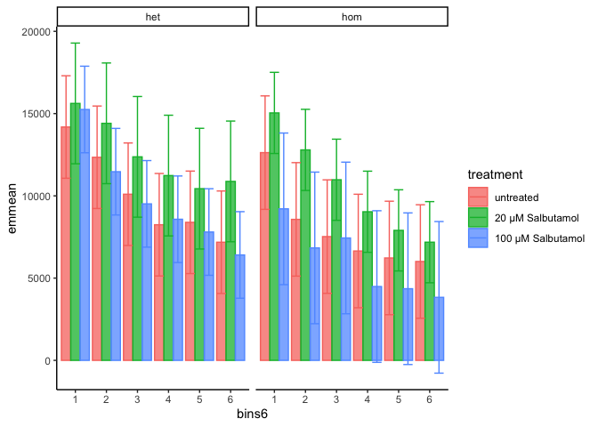
| Version | Author | Date |
|---|---|---|
| e7fb2e6 | Karissa Barthelson | 2023-08-23 |
print(emmeans(fit.dists, ~ genotype * treatment), type = "response") %>%
as_tibble() %>%
ggplot(aes(x = treatment, y = emmean/100, colour = genotype)) +
geom_col(aes(fill = genotype),
alpha = 0.75,
position = position_dodge()) +
geom_errorbar(aes(ymin = lower.CL/100, ymax = upper.CL/100),
position = position_dodge()) +
facet_wrap(~treatment, nrow = 1, scales = "free_x") +
labs(title = "7 days on salbutamol (with alarm)",
y = "Average distance travelled\nper 10 min bin (cm)") genotype treatment emmean SE df lower.CL upper.CL
het untreated 10074 1269 29.7 7481 12667
hom untreated 7934 1384 41.8 5140 10727
het 20 µM Salbutamol 12491 1475 42.3 9515 15466
hom 20 µM Salbutamol 10488 995 29.2 8454 12523
het 100 µM Salbutamol 9836 1066 27.3 7650 12022
hom 100 µM Salbutamol 6026 1860 42.7 2274 9779
Results are averaged over the levels of: bins6, sex
Degrees-of-freedom method: kenward-roger
Confidence level used: 0.95 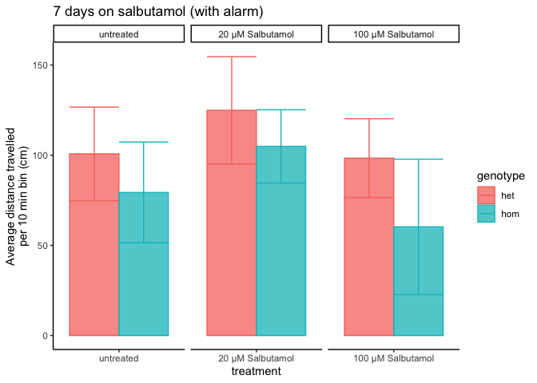
| Version | Author | Date |
|---|---|---|
| e7fb2e6 | Karissa Barthelson | 2023-08-23 |
total turns
# saving this object out as it does not let the rmarkdown doc run.
# glm_timebyturns <- final_data_long %>%
# dplyr::distinct(fish_id, bin, .keep_all = TRUE) %>%
# mutate(bin = case_when(
# bin == 1 ~ "0-10 mins",
# bin == 2 ~ "10-20 mins",
# bin == 3 ~ "20-30 mins",
# bin == 4 ~ "30-40 mins",
# bin == 5 ~ "40-50 mins",
# bin == 6 ~ "50-60 mins"
# )) %>%
# glmer.nb(total_turns ~ genotype*treatment*bin + (1|start_time),
# data = .)
# glm_timebyturns %>% saveRDS("output/R_objects/pilot/salbutamnol_pilot_7days_glmtimeBytotalturns.rds")
# re-import this object
glm_timebyturns <- read_rds("output/R_objects/pilot/salbutamnol_pilot_7days_glmtimeBytotalturns.rds")
Anova(glm_timebyturns) %>%
signif(digits = 2) %>%
kable %>%
kable_styling(full_width = F) %>%
row_spec(color = "red", row = c(1, 3, 4))| Chisq | Df | Pr(>Chisq) | |
|---|---|---|---|
| genotype | 11.00 | 1 | 0.00088 |
| treatment | 0.54 | 2 | 0.76000 |
| bin | 21.00 | 5 | 0.00078 |
| genotype:treatment | 9.20 | 2 | 0.01000 |
| genotype:bin | 7.70 | 5 | 0.18000 |
| treatment:bin | 8.60 | 10 | 0.57000 |
| genotype:treatment:bin | 6.70 | 10 | 0.75000 |
print(emmeans(glm_timebyturns, ~ genotype * treatment * bin), type = "response") %>%
as_tibble() %>%
mutate(binforvis = case_when(
bin == 1 ~ "0-10 mins",
bin == 2 ~ "10-20 mins",
bin == 3 ~ "20-30 mins",
bin == 4 ~ "30-40 mins",
bin == 5 ~ "40-50 mins",
bin == 6 ~ "50-60 mins"
)) %>%
ggplot(aes(x = bin, y = response, colour = genotype)) +
geom_col(aes(fill =genotype),
alpha = 0.75,
position = position_dodge()) +
geom_errorbar(aes(ymin = asymp.LCL, ymax = asymp.UCL),
position = position_dodge()) +
facet_wrap(~treatment, nrow = 1) +
theme(axis.text.x = element_text(hjust = 1,
vjust = 1,
angle = 45),
legend.position = "bottom") +
scale_color_viridis_d(end = 0.8, option = "inferno") +
scale_fill_viridis_d(end = 0.8, option = "inferno") +
labs(y = "Predicted number of turns per bin",
x = "Time interval",
title = "GLM-predicted total turns per bin",
subtitle = "Effect of genotype*treatment*bin p = 0.95"
) genotype treatment bin response SE df asymp.LCL asymp.UCL
het untreated 0-10 mins 125.6 36.6 Inf 70.9 222.4
hom untreated 0-10 mins 128.8 41.1 Inf 69.0 240.7
het 20 µM Salbutamol 0-10 mins 102.3 34.9 Inf 52.5 199.6
hom 20 µM Salbutamol 0-10 mins 112.7 30.3 Inf 66.6 190.8
het 100 µM Salbutamol 0-10 mins 106.6 28.7 Inf 62.9 180.5
hom 100 µM Salbutamol 0-10 mins 99.3 31.9 Inf 52.9 186.4
het untreated 10-20 mins 126.5 36.8 Inf 71.5 223.9
hom untreated 10-20 mins 99.5 31.8 Inf 53.2 186.1
het 20 µM Salbutamol 10-20 mins 117.9 40.1 Inf 60.5 229.7
hom 20 µM Salbutamol 10-20 mins 109.1 29.3 Inf 64.4 184.7
het 100 µM Salbutamol 10-20 mins 93.2 25.1 Inf 54.9 158.0
hom 100 µM Salbutamol 10-20 mins 64.7 20.9 Inf 34.3 121.8
het untreated 20-30 mins 112.8 32.9 Inf 63.6 199.9
hom untreated 20-30 mins 74.9 24.0 Inf 39.9 140.5
het 20 µM Salbutamol 20-30 mins 97.8 33.3 Inf 50.1 190.7
hom 20 µM Salbutamol 20-30 mins 95.4 25.7 Inf 56.3 161.7
het 100 µM Salbutamol 20-30 mins 134.7 36.6 Inf 79.1 229.4
hom 100 µM Salbutamol 20-30 mins 61.8 20.0 Inf 32.8 116.4
het untreated 30-40 mins 93.2 27.3 Inf 52.5 165.3
hom untreated 30-40 mins 70.5 22.7 Inf 37.6 132.4
het 20 µM Salbutamol 30-40 mins 90.4 30.8 Inf 46.3 176.4
hom 20 µM Salbutamol 30-40 mins 72.1 19.4 Inf 42.5 122.3
het 100 µM Salbutamol 30-40 mins 218.1 60.6 Inf 126.6 376.0
hom 100 µM Salbutamol 30-40 mins 50.2 16.4 Inf 26.5 95.3
het untreated 40-50 mins 90.3 26.4 Inf 50.9 160.1
hom untreated 40-50 mins 74.3 23.8 Inf 39.6 139.2
het 20 µM Salbutamol 40-50 mins 75.7 25.9 Inf 38.7 147.8
hom 20 µM Salbutamol 40-50 mins 66.0 17.8 Inf 38.8 112.0
het 100 µM Salbutamol 40-50 mins 163.5 45.0 Inf 95.4 280.5
hom 100 µM Salbutamol 40-50 mins 44.8 14.6 Inf 23.7 85.0
het untreated 50-60 mins 71.7 20.9 Inf 40.4 127.1
hom untreated 50-60 mins 70.8 22.8 Inf 37.7 132.9
het 20 µM Salbutamol 50-60 mins 76.0 26.0 Inf 38.9 148.6
hom 20 µM Salbutamol 50-60 mins 63.3 17.1 Inf 37.3 107.6
het 100 µM Salbutamol 50-60 mins 60.3 16.4 Inf 35.5 102.7
hom 100 µM Salbutamol 50-60 mins 43.3 14.2 Inf 22.8 82.2
Confidence level used: 0.95
Intervals are back-transformed from the log scale 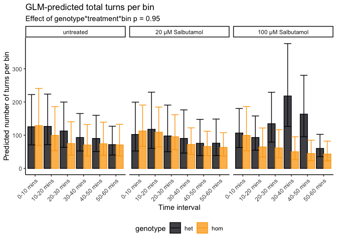
| Version | Author | Date |
|---|---|---|
| e7fb2e6 | Karissa Barthelson | 2023-08-23 |
print(emmeans(glm_timebyturns, ~ genotype * treatment), type ="response") %>%
as_tibble() %>%
ggplot(aes(x = treatment, y = response, colour = genotype)) +
geom_col(aes(fill = genotype),
alpha = 0.5,
width = 0.75,
position = position_dodge()) +
geom_errorbar(aes(ymin = asymp.LCL, ymax =asymp.UCL),
width = 0.125,
size = 1,
position = position_dodge(width = 0.75)) +
scale_color_viridis_d(end = 0.8, option = "inferno") +
scale_fill_viridis_d(end = 0.8, option = "inferno") +
labs(y = "model-predicted average\nnumber of turns per bin",
x = "Treatment",
# title = "Activity of zebrafish in a ymaze ",
# subtitle = "Effect of genotype*treatment p = 0.03"
) +
theme(text = element_text(size = 20)
) genotype treatment response SE df asymp.LCL asymp.UCL
het untreated 101.3 20.1 Inf 68.7 149.3
hom untreated 84.2 17.1 Inf 56.6 125.2
het 20 µM Salbutamol 92.2 19.2 Inf 61.3 138.7
hom 20 µM Salbutamol 84.1 15.9 Inf 58.0 121.9
het 100 µM Salbutamol 119.3 22.8 Inf 81.9 173.6
hom 100 µM Salbutamol 58.2 12.0 Inf 38.8 87.2
Results are averaged over the levels of: bin
Confidence level used: 0.95
Intervals are back-transformed from the log scale 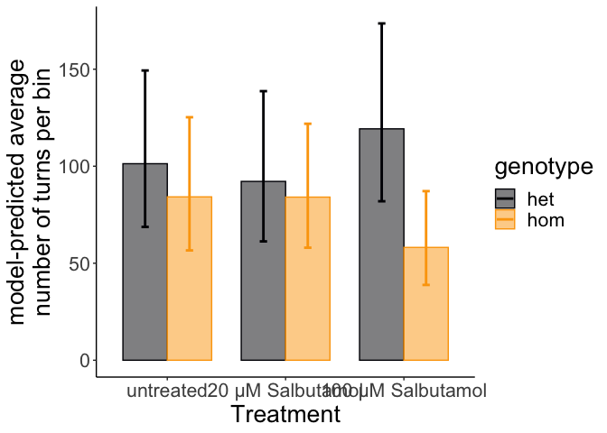
time spent in each zone of the Y-maze
I next will assess whether fish in each maze spend more or less time in each zone of the Y-maze (i.e. in each arm of the maze or the middle). This is also kind of representitve of locomotion, as they might spend longer in each arm of the maze if the swim speed was slower.
In the plot below, the fish appear to spend less time in zone 4. This can be explained as zone 4 is the middle zone and the fish generally swim straight through it.
read_csv("data/pilot/7 days/processed_data/time_in_zone.csv") %>%
mutate(fish_id = as.character(fish_id)) %>%
dplyr::select(fish_id, bin, zone, time_in_zone) %>%
left_join(meta) %>%
dplyr::filter(genotype %in% c("het", "hom")) %>%
dplyr::filter(zone %in% c(1:4)) %>%
group_by(fish_id, zone) %>%
mutate(total_timeInZone = sum(time_in_zone),
zone = paste0("zone ", zone)) %>%
dplyr::distinct(fish_id, zone, .keep_all = TRUE) %>%
ggplot(aes(x = treatment, y = total_timeInZone/60)) +
geom_quasirandom(aes(colour = genotype)
) +
geom_boxplot(aes(fill = genotype),
outlier.shape = NA,
alpha = 0.5) +
facet_wrap(~zone, nrow = 1) +
scale_y_log10() +
scale_fill_viridis_d(end = 0.75) +
scale_colour_viridis_d(end = 0.75) +
easy_rotate_x_labels(angle = -45) +
labs(y = "Total time spent in each zone (mins, log scale)",
title = "Total time spent in each zone")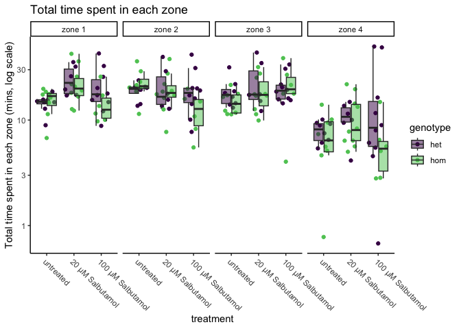
check for handedness
Fontana et al. (https://doi.org/10.1007/s10071-019-01296-9, Matt Parker’s group) showed that fish sometimes show a behavioural lateralisation (i.e. handedness). If fish show this, then they would perform less alternation tetragrams not due to working memory. The plot below circles each of the L_R bias groups.
# make the LR bias object
LR_Bias <- final_data %>%
dplyr::select(L, R, total_turns, fish_id) %>%
group_by(fish_id) %>%
mutate(L = sum(L),
R = sum(R),
total_turns = sum(total_turns),
L_R_bias = case_when( #consider more than 60% of the time performing a left or right turn to be a bias
L/total_turns > 0.6 ~ "Left",
R/total_turns > 0.6 ~ "Right",
TRUE ~ "Neither"
)) %>%
dplyr::select(fish_id, L_R_bias) %>%
unique() %>%
mutate(L_R_bias = factor(L_R_bias,
levels = c("Neither", "Left", "Right"))
)ggarrange(
final_data %>%
left_join(LR_Bias) %>%
group_by(fish_id) %>%
mutate(L = sum(L),
R = sum(R),
total_turns = sum(total_turns)
) %>%
ggplot(aes(L, R)) +
geom_point(aes(shape = L_R_bias, colour = genotype),
size = 4) +
geom_mark_ellipse(aes(fill = L_R_bias, label = L_R_bias),
alpha = 0.2,
con.cap = 0) +
labs(title = "By Genotype") +
scale_color_viridis_d(end = 0.75) +
theme(legend.position = "left",
aspect.ratio = 1) +
scale_fill_viridis_d(option = "plasma"),
final_data %>%
left_join(LR_Bias) %>%
group_by(fish_id) %>%
mutate(L = sum(L),
R = sum(R),
total_turns = sum(total_turns)
) %>%
ggplot(aes(L, R)) +
geom_point(aes(shape = L_R_bias, colour = treatment),
size = 4) +
geom_mark_ellipse(aes(fill = L_R_bias, label = L_R_bias),
alpha = 0.2,
con.cap = 0)+
labs(title = "By Treatment") +
scale_color_viridis_d(end = 0.75) +
scale_fill_viridis_d(option = "plasma") +
theme(legend.position = "right",
aspect.ratio = 1)
)
| Version | Author | Date |
|---|---|---|
| e7fb2e6 | Karissa Barthelson | 2023-08-23 |
The overall propotions of fish showing left, right or no bias is simialr across the 4 experimental groups.
final_data %>%
left_join(LR_Bias) %>%
group_by(fish_id) %>%
mutate(L = sum(L),
R = sum(R),
total_turns = sum(total_turns),
genotreat = paste0(genotype, "_", treatment)
) %>%
ggplot(aes(x = genotreat, fill = L_R_bias )) +
geom_bar()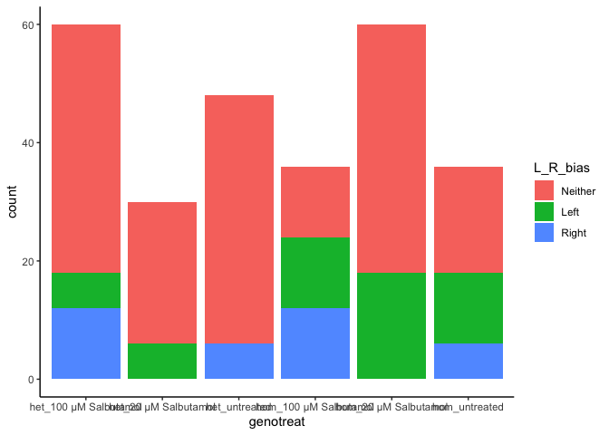
| Version | Author | Date |
|---|---|---|
| e7fb2e6 | Karissa Barthelson | 2023-08-23 |
test for changes to alternation
Cleal et al. showed that zebrafish naturally perform more of the alternation tetragrams (LRLR and RLRL) in a Y-maze. Here, we actually see more reps that alts. I will look at this more closely later.
final_data_summedoverbins %>%
dplyr::distinct(x, .keep_all = T) %>%
ggplot(aes(x = tetras, y = x)) +
geom_jitter(aes(colour = tetras,
shape = sex)) +
geom_boxplot(outlier.shape = NA,
fill = NA
) +
scale_fill_viridis_d() +
labs(y = "Number of tetragrams",
colour = "Tetragram",
x = "Tetragram")+
theme(legend.position = "bottom") +
ggtitle("Total number of 16 possible tetragrams performed by zebrafish in a Y-maze\nduring a 1 hour search period") 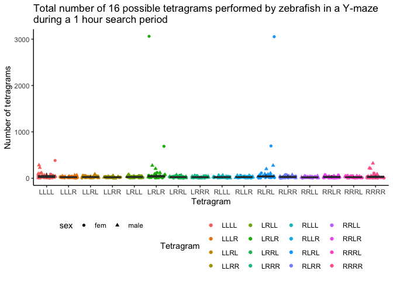
| Version | Author | Date |
|---|---|---|
| e7fb2e6 | Karissa Barthelson | 2023-08-23 |
We can also overlay the genotype boxplots as shown below. Looks like the heterozyous and homozygous fish perform more alternations than the WT fish. I will look into this more later in the analysis
final_data_summedoverbins %>%
ggplot(aes(x = tetras, y = x)) +
geom_jitter(aes(colour = tetras,
shape = sex)) +
geom_boxplot(outlier.shape = NA,
aes(fill = genotype),
alpha = 0.5,
) +
scale_fill_viridis_d() +
labs(y = "Number of tetragrams",
colour = "Tetragram",
x = "Tetragram")+
theme(legend.position = "bottom") +
facet_wrap(~treatment, ncol = 1) +
easy_rotate_x_labels(angle = -45) +
annotate("rect", # add some boxes aeround the alts
xmin = 5.5, xmax = 6.5,
ymin = -1, ymax = 600,
alpha = 0, color= "red") +
annotate("rect",
xmin = 10.5, xmax = 11.5,
ymin = -1, ymax = 200,
alpha = 0, color= "red") +
ggtitle("Total number of 16 possible tetragrams performed by zebrafish in a Y-maze\nduring a 1 hour search period") 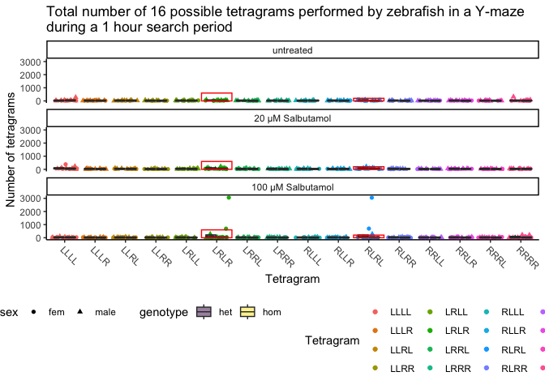
| Version | Author | Date |
|---|---|---|
| e7fb2e6 | Karissa Barthelson | 2023-08-23 |
The alternation tetragrams are the tetragram of interest (the measure of working memory). Below indicates the number of tetragrams performed by zerbafish across the 6 x 10 min blocks of the hour they spent in the maze.
final_data_long %>%
dplyr::distinct(fish_id, bin, .keep_all = T) %>%
mutate(binforvis = case_when(
bin == 1 ~ "0-10 mins",
bin == 2 ~ "10-20 mins",
bin == 3 ~ "20-30 mins",
bin == 4 ~ "30-40 mins",
bin == 5 ~ "40-50 mins",
bin == 6 ~ "50-60 mins"
)) %>%
ggplot(aes(x = treatment, y = alts)) +
geom_boxplot(outlier.shape = NA,
aes(fill = genotype),
alpha = 0.5) +
geom_point(aes(colour = genotype),
position = position_jitterdodge()) +
facet_wrap(~binforvis, nrow = 1) +
theme(axis.text.x = element_text(angle = 45, hjust = 1, vjust = 1),
legend.position = "bottom") +
ylab("Frequency of alternation tetragrams (LRLR + RLRL)") +
scale_colour_viridis_d(end = 0.75) +
scale_fill_viridis_d(end = 0.75) 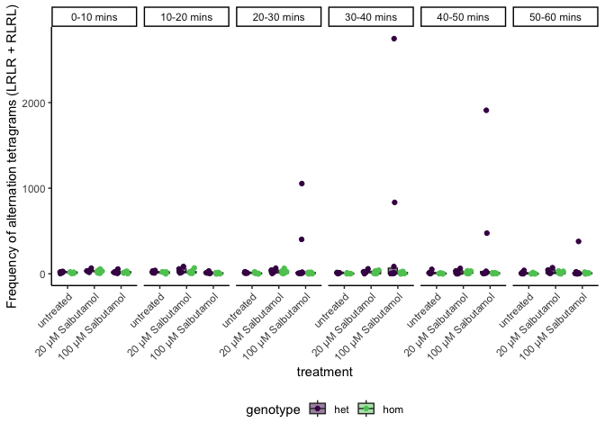
| Version | Author | Date |
|---|---|---|
| e7fb2e6 | Karissa Barthelson | 2023-08-23 |
We can also display this as the relative amount of alternation tetragrams performed by zebrafish in a 1 hour search period. This will control for how active each fish is. Again, fish 18 and 24 looks like outliers.
final_data_long %>%
dplyr::distinct(fish_id, bin, .keep_all = T) %>%
mutate(binforvis = case_when(
bin == 1 ~ "0-10 mins",
bin == 2 ~ "10-20 mins",
bin == 3 ~ "20-30 mins",
bin == 4 ~ "30-40 mins",
bin == 5 ~ "40-50 mins",
bin == 6 ~ "50-60 mins"
)) %>%
ggplot(aes(x = treatment, y = rel_alts)) +
geom_boxplot(outlier.shape = NA,
aes(fill = genotype),
alpha = 0.5) +
geom_point(aes(colour = genotype),
position = position_jitterdodge()) +
facet_wrap(~binforvis, nrow = 1) +
theme(axis.text.x = element_text(angle = 45, hjust = 1, vjust = 1),
legend.position = "bottom") +
ylab("Relative number of alternation tetragrams\n(LRLR + RLRL) / total_turns") +
scale_colour_viridis_d(end = 0.75) +
scale_fill_viridis_d(end = 0.75) 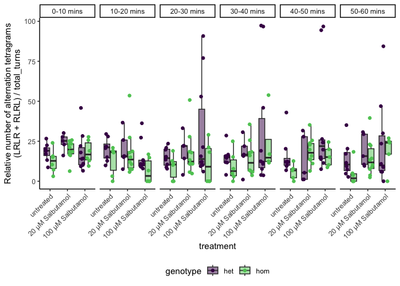 Finally, I will now test for alternation changes using a generalised linear mixed effect model (beta-binomial distribution). We use this because it is count data which is over-dispersed, and fixed and random effects are included. The link function is logit. No significant effects are observed on working memory. Only the L_R_bias term is significant, this is to be expected, as they would probably be performing more repitiions. The bin:Genotype effect is close (ish) to statistical significance. Meaning that this might have something there. but this does not take into account the Treatment group.
Note that I have ignored the effect of Sex here. We have never really seen a Sex effect in all of our ymaze analyses.
glm <-
final_data %>%
left_join(LR_Bias) %>%
mutate(
non_alts = total_turns - alts,
bin = as.factor(bin)
) %>%
glmmTMB(
cbind(alts, non_alts) ~ (bin + genotype + treatment + sex)^3 + L_R_bias + (1|start_time) + (1|fish_id),
family = betabinomial(),
data = .
)
Anova(glm) %>%
as.data.frame() %>%
dplyr::rename(pval = `Pr(>Chisq)`) %>%
kable() %>%
kable_styling(full_width = FALSE) %>%
row_spec(row = 4, bold = TRUE)| Chisq | Df | pval | |
|---|---|---|---|
| bin | 4.1694531 | 5 | 0.5252859 |
| genotype | 3.5499923 | 1 | 0.0595457 |
| treatment | 2.8535555 | 2 | 0.2400813 |
| sex | 1.5725765 | 1 | 0.2098332 |
| L_R_bias | 8.6430321 | 2 | 0.0132797 |
| bin:genotype | 6.9750654 | 5 | 0.2225013 |
| bin:treatment | 30.0897229 | 10 | 0.0008282 |
| bin:sex | 13.3631257 | 5 | 0.0202034 |
| genotype:treatment | 4.9744861 | 2 | 0.0831389 |
| genotype:sex | 0.5327410 | 1 | 0.4654567 |
| treatment:sex | 11.1268508 | 2 | 0.0038356 |
| bin:genotype:treatment | 19.8686036 | 10 | 0.0305203 |
| bin:genotype:sex | 2.4671047 | 5 | 0.7814408 |
| bin:treatment:sex | 21.7660480 | 10 | 0.0163418 |
| genotype:treatment:sex | 0.6431395 | 2 | 0.7250101 |
Vis
genotype x treatment
The effect of genotype x treatment is not too far off statistical significance (p = 0.17) and is trending towards a rescue.
print(emmeans(glm, ~ genotype * treatment), type = "response") %>%
as_tibble() %>%
dplyr::filter(treatment != "100 µM Salbutamol") %>%
ggplot(aes(x = treatment, y = prob, colour = genotype)) +
geom_col(aes(fill = genotype),
alpha = 0.5,
width = 0.75,
position = position_dodge()) +
geom_errorbar(aes(ymin = asymp.LCL, ymax = asymp.UCL ),
width = 0.125,
size = 1,
position = position_dodge(width = 0.75)) +
theme(axis.text.x = element_text(hjust = 1,
vjust = 1,
angle = 45),
legend.position = "bottom") +
scale_color_viridis_d(end = 0.8, option = "inferno") +
scale_fill_viridis_d(end = 0.8, option = "inferno") +
labs(y = "Estimated probability of alternation\n(LRLR + RLRL)",
x = "genotype",
title = "GLM predicted probability of zebrafish performing an alternation\ntetragram due to Genotype and Treatment"
) genotype treatment prob SE df asymp.LCL asymp.UCL
het untreated 0.1422 0.0313 Inf 0.0911 0.215
hom untreated 0.0819 0.0274 Inf 0.0418 0.154
het 20 µM Salbutamol 0.1339 0.0342 Inf 0.0798 0.216
hom 20 µM Salbutamol 0.1485 0.0295 Inf 0.0993 0.216
het 100 µM Salbutamol 0.1893 0.0357 Inf 0.1290 0.269
hom 100 µM Salbutamol 0.0640 0.0313 Inf 0.0240 0.160
Results are averaged over the levels of: bin, sex, L_R_bias
Confidence level used: 0.95
Intervals are back-transformed from the logit scale 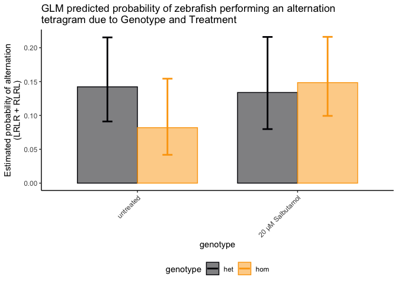
| Version | Author | Date |
|---|---|---|
| e7fb2e6 | Karissa Barthelson | 2023-08-23 |
genotype x treatment x sex
print(emmeans(glm, ~ genotype * treatment * sex), type = "response") %>%
as_tibble() %>%
ggplot(aes(x = treatment, y = prob, colour = genotype)) +
geom_col(aes(fill = genotype),
alpha = 0.5,
width = 0.75,
position = position_dodge()) +
geom_errorbar(aes(ymin = asymp.LCL, ymax = asymp.UCL ),
width = 0.125,
size = 1,
position = position_dodge(width = 0.75)) +
theme(axis.text.x = element_text(hjust = 1,
vjust = 1,
angle = 45),
legend.position = "bottom") +
facet_wrap(~sex) +
scale_color_viridis_d(end = 0.8, option = "inferno") +
scale_fill_viridis_d(end = 0.8, option = "inferno") +
labs(y = "Estimated probability of alternation\n(LRLR + RLRL)",
x = "genotype",
title = "GLM predicted probability of zebrafish performing an alternation\ntetragram due to Genotype and Treatment"
) genotype treatment sex prob SE df asymp.LCL asymp.UCL
het untreated fem 0.1225 0.0380 Inf 0.0653 0.218
hom untreated fem 0.0721 0.0416 Inf 0.0224 0.208
het 20 µM Salbutamol fem 0.1236 0.0441 Inf 0.0597 0.238
hom 20 µM Salbutamol fem 0.1548 0.0371 Inf 0.0951 0.242
het 100 µM Salbutamol fem 0.2811 0.0652 Inf 0.1720 0.424
hom 100 µM Salbutamol fem 0.1640 0.0387 Inf 0.1014 0.254
het untreated male 0.1645 0.0386 Inf 0.1019 0.255
hom untreated male 0.0930 0.0252 Inf 0.0540 0.155
het 20 µM Salbutamol male 0.1449 0.0416 Inf 0.0806 0.247
hom 20 µM Salbutamol male 0.1423 0.0359 Inf 0.0853 0.228
het 100 µM Salbutamol male 0.1224 0.0272 Inf 0.0783 0.186
hom 100 µM Salbutamol male 0.0233 0.0226 Inf 0.0034 0.143
Results are averaged over the levels of: bin, L_R_bias
Confidence level used: 0.95
Intervals are back-transformed from the logit scale 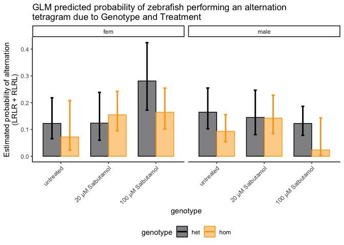
| Version | Author | Date |
|---|---|---|
| e7fb2e6 | Karissa Barthelson | 2023-08-23 |
bin x Genotype x Treatment
While this is not significant, the homs treated with iron appear to be performing more alternations more like their het saline siblings
print(emmeans(glm, ~ genotype * treatment * bin), type = "response") %>%
as_tibble() %>%
mutate(binforvis = case_when(
bin == 1 ~ "0-10 mins",
bin == 2 ~ "10-20 mins",
bin == 3 ~ "20-30 mins",
bin == 4 ~ "30-40 mins",
bin == 5 ~ "40-50 mins",
bin == 6 ~ "50-60 mins"
)) %>%
ggplot(aes(x = binforvis, y = prob, colour = genotype)) +
geom_col(aes(fill = genotype),
alpha = 0.5,
# width = 0.75,
position = position_dodge()) +
geom_errorbar(aes(ymin = asymp.LCL, ymax = asymp.UCL ),
# width = 0.125,
size = 1,
position = position_dodge()) +
facet_wrap(~treatment, nrow = 1) +
theme(axis.text.x = element_text(hjust = 1,
vjust = 1,
angle = 45),
legend.position = "bottom") +
scale_color_viridis_d(end = 0.8, option = "inferno") +
scale_fill_viridis_d(end = 0.8, option = "inferno") +
labs(y = "Estimated probability of alternation\n(LRLR + RLRL)",
x = "Time interval",
title = "GLM predicted probability of zebrafish performing an alternation\ntetragram due to Genotype and Treatment",
subtitle = "p = 0.25"
) genotype treatment bin prob SE df asymp.LCL asymp.UCL
het untreated 1 0.1592 0.0447 Inf 0.0896 0.267
hom untreated 1 0.1191 0.0494 Inf 0.0510 0.254
het 20 µM Salbutamol 1 0.1708 0.0541 Inf 0.0888 0.304
hom 20 µM Salbutamol 1 0.1758 0.0419 Inf 0.1080 0.273
het 100 µM Salbutamol 1 0.1089 0.0310 Inf 0.0613 0.186
hom 100 µM Salbutamol 1 0.1480 0.0729 Inf 0.0530 0.350
het untreated 2 0.1759 0.0470 Inf 0.1016 0.287
hom untreated 2 0.1400 0.0544 Inf 0.0629 0.283
het 20 µM Salbutamol 2 0.1542 0.0487 Inf 0.0806 0.275
hom 20 µM Salbutamol 2 0.1505 0.0375 Inf 0.0906 0.239
het 100 µM Salbutamol 2 0.0886 0.0263 Inf 0.0488 0.155
hom 100 µM Salbutamol 2 0.0723 0.0386 Inf 0.0246 0.194
het untreated 3 0.1410 0.0402 Inf 0.0789 0.239
hom untreated 3 0.1109 0.0494 Inf 0.0446 0.250
het 20 µM Salbutamol 3 0.1404 0.0460 Inf 0.0718 0.256
hom 20 µM Salbutamol 3 0.1477 0.0372 Inf 0.0886 0.236
het 100 µM Salbutamol 3 0.2665 0.0546 Inf 0.1736 0.386
hom 100 µM Salbutamol 3 0.0534 0.0352 Inf 0.0142 0.181
het untreated 4 0.1312 0.0391 Inf 0.0715 0.228
hom untreated 4 0.0596 0.0322 Inf 0.0202 0.164
het 20 µM Salbutamol 4 0.1220 0.0420 Inf 0.0605 0.231
hom 20 µM Salbutamol 4 0.1226 0.0335 Inf 0.0705 0.205
het 100 µM Salbutamol 4 0.2894 0.0572 Inf 0.1910 0.413
hom 100 µM Salbutamol 4 0.0631 0.0425 Inf 0.0162 0.216
het untreated 5 0.1393 0.0408 Inf 0.0768 0.240
hom untreated 5 0.0531 0.0311 Inf 0.0164 0.159
het 20 µM Salbutamol 5 0.0885 0.0337 Inf 0.0411 0.180
hom 20 µM Salbutamol 5 0.1695 0.0416 Inf 0.1026 0.267
het 100 µM Salbutamol 5 0.3178 0.0609 Inf 0.2117 0.447
hom 100 µM Salbutamol 5 0.0470 0.0332 Inf 0.0114 0.174
het untreated 6 0.1136 0.0366 Inf 0.0591 0.207
hom untreated 6 0.0492 0.0285 Inf 0.0154 0.146
het 20 µM Salbutamol 6 0.1413 0.0471 Inf 0.0714 0.260
hom 20 µM Salbutamol 6 0.1306 0.0351 Inf 0.0758 0.216
het 100 µM Salbutamol 6 0.1653 0.0442 Inf 0.0957 0.271
hom 100 µM Salbutamol 6 0.0389 0.0277 Inf 0.0094 0.147
Results are averaged over the levels of: sex, L_R_bias
Confidence level used: 0.95
Intervals are back-transformed from the logit scale 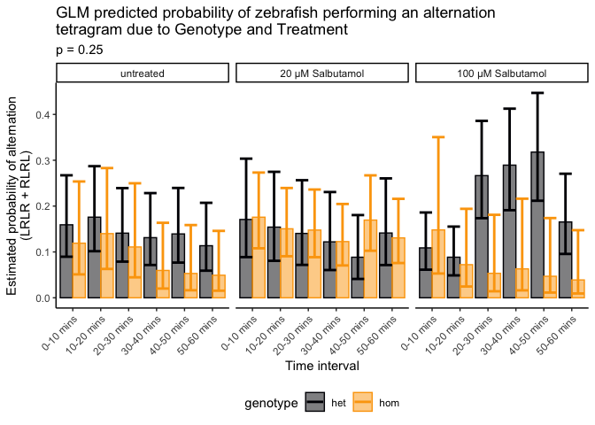
export data
saveRDS(glm, "output/R_objects/pilot/glmAlts7daysSalbutamol.rds")
saveRDS(glm_timebyturns, "output/R_objects/pilot/glmtotalTurnss7daysSalbutamol.rds")
sessionInfo()R version 4.2.3 (2023-03-15)
Platform: x86_64-apple-darwin17.0 (64-bit)
Running under: macOS Catalina 10.15.7
Matrix products: default
BLAS: /Library/Frameworks/R.framework/Versions/4.2/Resources/lib/libRblas.0.dylib
LAPACK: /Library/Frameworks/R.framework/Versions/4.2/Resources/lib/libRlapack.dylib
locale:
[1] en_AU.UTF-8/en_AU.UTF-8/en_AU.UTF-8/C/en_AU.UTF-8/en_AU.UTF-8
attached base packages:
[1] stats graphics grDevices utils datasets methods base
other attached packages:
[1] MASS_7.3-60 glmmTMB_1.1.7 emmeans_1.8.6 car_3.1-2
[5] carData_3.0-5 performance_0.10.3 lme4_1.1-33 Matrix_1.5-4
[9] broom_1.0.4 kableExtra_1.3.4 ggrepel_0.9.3 ggforce_0.4.1
[13] ggbeeswarm_0.7.2 ggfortify_0.4.16 ggeasy_0.1.4 ggpubr_0.6.0
[17] scales_1.2.1 magrittr_2.0.3 here_1.0.1 readxl_1.4.2
[21] lubridate_1.9.2 forcats_1.0.0 stringr_1.5.0 dplyr_1.1.2
[25] purrr_1.0.1 readr_2.1.4 tidyr_1.3.0 tibble_3.2.1
[29] ggplot2_3.4.2 tidyverse_2.0.0 workflowr_1.7.0
loaded via a namespace (and not attached):
[1] TH.data_1.1-2 minqa_1.2.5 colorspace_2.1-0
[4] ggsignif_0.6.4 rprojroot_2.0.3 estimability_1.4.1
[7] fs_1.6.2 rstudioapi_0.14 farver_2.1.1
[10] bit64_4.0.5 fansi_1.0.4 mvtnorm_1.1-3
[13] xml2_1.3.4 codetools_0.2-19 splines_4.2.3
[16] cachem_1.0.8 knitr_1.42 polyclip_1.10-4
[19] jsonlite_1.8.4 nloptr_2.0.3 pbkrtest_0.5.2
[22] compiler_4.2.3 httr_1.4.6 backports_1.4.1
[25] fastmap_1.1.1 cli_3.6.1 later_1.3.1
[28] tweenr_2.0.2 htmltools_0.5.5 tools_4.2.3
[31] coda_0.19-4 gtable_0.3.3 glue_1.6.2
[34] Rcpp_1.0.10 cellranger_1.1.0 jquerylib_0.1.4
[37] vctrs_0.6.2 svglite_2.1.1 nlme_3.1-162
[40] insight_0.19.1 xfun_0.39 ps_1.7.5
[43] rvest_1.0.3 timechange_0.2.0 lifecycle_1.0.3
[46] rstatix_0.7.2 getPass_0.2-2 zoo_1.8-12
[49] vroom_1.6.3 hms_1.1.3 promises_1.2.0.1
[52] parallel_4.2.3 sandwich_3.0-2 TMB_1.9.4
[55] yaml_2.3.7 see_0.7.5 gridExtra_2.3
[58] sass_0.4.6 stringi_1.7.12 bayestestR_0.13.1
[61] highr_0.10 boot_1.3-28.1 rlang_1.1.1
[64] pkgconfig_2.0.3 systemfonts_1.0.4 evaluate_0.21
[67] lattice_0.21-8 patchwork_1.1.2 labeling_0.4.2
[70] cowplot_1.1.1 bit_4.0.5 processx_3.8.1
[73] tidyselect_1.2.0 R6_2.5.1 generics_0.1.3
[76] multcomp_1.4-23 mgcv_1.8-42 pillar_1.9.0
[79] whisker_0.4.1 withr_2.5.0 datawizard_0.7.1
[82] survival_3.5-5 abind_1.4-5 crayon_1.5.2
[85] utf8_1.2.3 tzdb_0.3.0 rmarkdown_2.21
[88] grid_4.2.3 callr_3.7.3 git2r_0.32.0
[91] digest_0.6.31 webshot_0.5.4 xtable_1.8-4
[94] numDeriv_2016.8-1.1 httpuv_1.6.10 munsell_0.5.0
[97] beeswarm_0.4.0 viridisLite_0.4.2 vipor_0.4.5
[100] bslib_0.4.2